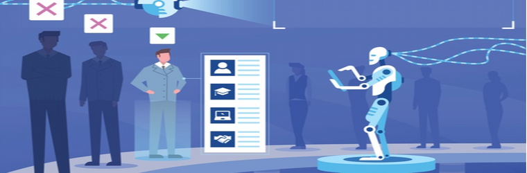

Artifical Intelligence Selection Algorithms
Overview of AI Selection Algorithms
Purpose:
AI selecting algorithms are becoming increasingly more popular, due to their many uses. Using systems that are based on data analysis, Artificial Intelligence Selection Algorithms are able to select or filter through potential job candidates, patients, and other categories. Through being trained on data sets, machines can learn what makes a good candidate, a patient in need, or a criminal likely to be a second offender. The purpose of utilising algorithmic selection systems is threefold: to improve quality and efficiency of decision making and eliminate bias. Firstly, since machines can process data at such fast speeds, applicants, patients and the data of people that needs to be analysed can be completed at much faster paces. Furthermore, the quality of the decision making can be enhanced by an AI algorithm through consistency in decision making and its ability to recognise patterns and optimal solutions through analysing immense amounts of data. Lastly, through selection algorithms being programmed to anonymise an applicant's data and ignore key words or factors relating to gender or race, and then processing the information decisions can hypothetically be made without bias, unlike a human. As such, in spaces such as recruitment and the medical field, where there are immense amounts of people to sort and classify, Artificial Intelligence Selecting Algorithms are incredibly useful in increasing efficiency and quality.
Features:
AI algorithms can help identify systemic bias within organisations. Unlike humans, where the thought process and outcome cannot be analysed and measured, AI algorithms can be. As such, if a biased result were to occur, the route the algorithm took to get there can be changed and improved upon. Through revealing the systemic bias, it can also help reveal subtle discriminations in the input data, and also inform of the unintentional biases society has or has historically had, through the machine learning such biases. AI algorithms can evaluate applications in a numeric way; a useful feature for hirers. The selection algorithms are able to use a set of predefined criteria and their own learning to score and rank an applicant's resume or CV or rank applications, based on identifying suitable qualifications or relevant skills and experiences. AI selection algorithms and algorithms in general are also able to calculate and predict possible outcomes of applicants and patients, as attempted in hiring systems and the Florida justice system.
Existing Products:
There have been many cases where ethical problems have arisen
AI selection algorithms has been implemented in many recruiting systems. These systems utilise 4 algorithmic selection features implemented in the 3 stages of the recruitment process - searching, screening, and selection. Searching, also known as candidate sourcing, involves the algorithm searching passive job applicants online, analysing social media profiles and applicants on recruitment platforms. The algorithm recognises the meaning their findings and then searches the web to match candidate's profiles. The screening feature of AI algorithms involves evaluating qualifications of candidates and ranking or scoring their competency. In the final selection stage, a human will choose the final decision for who receives the job, but algorithms are able to calculate risks of the final candidates to aid this decision. Selection algorithms have been implemented to aid companies in the hiring process. However, despite artificial intelligence selection algorithms being attempted to be implemented, there have been many cases where ethical problems have arisen and so the artificial intelligence aspect has been removed. AI selection algorithms were tried to be used to calculate the chance a criminal will re-offend in Florida's justice system, and also used in Amazon's hiring system to screen resumes in 2018. It was also used until 2019 in many American hospitals to decide which patients needed care through a clinical algorithm, until racial bias was found.

Hardware and Software used for AI selection algorithms
Software
After more machine learning, the artificial intelligence selection system will have created its own algorithms
Software utilised to create AI selection algorithms is based on a framework machine learning . The AI algorithm will be given training data by developers, and then shown the outcomes of each data. For example, in training hiring systems, under supervised machine learning, the artificial intelligence will be shown input data of resumes, and then told which resumes are the outcome; the resumes of those who got the job. The algorithm creates logical correlations between the data and the successful outcome. After more machine learning, the artificial intelligence selection system will have created its own algorithms from its correlations in data and learning which profiles got each job.
Hardware
Hardware associated with artificial intelligence models such as selection algorithms include standards such as CPUs, GPUs, and memory systems such as RAM. More specialised components include the use of Tensor Processing Units which are designed specifically for machine learning tasks. They can accelerate training times through being optimised for rapid and efficient matrix operations often used in such deep learning models. They are needed for programming and training AI selection algorithms. Field-programmable gate array (FGPA) chips are also used for machine learning for AI algorithms. They are used as they have higher compute capability than GPUs, and are able to be modified as they are a hardware circuit with reprogrammable logic gates. FGPA chips are mainly used for their flexibility in machine and deep learning, and as such are often associated with AI selection algorithms due to their training requiring it.
Analysis - Issues and Effects of AI Selection Algorithms
Ethical Issues
AI selection algorithms often have algorithmic bias due to limited data sets being the base for the design of algorithms. Initial data is often lacking diversity and containing existing biases, resulting in the AI algorithm being trained with an inner bias and incompleteness. For example, those who have been historically underrepresented will only have partial data for the algorithm to be trained on, and leads to risk of discrimination against them. This is due to the training data being more representative of certain, often more privileged groups, than others. This can be seen in the US, when in 2019 racial bias was found in an algorithm implemented in many hospitals that decided which patients required care. Due to being trained on past data on health care spending, Black patients only had partial data due to historically spending less on healthcare compared to white patients. This led to Black patients being deprioritized as the algorithm thought they had less medical issues due to having spent less on healthcare.

These biases result in those affected by discrimination at risk for economic and moral harm.
Bias in its systems which can harm individuals as well as certain races can also stem from the logical correlations the algorithm identified in its machine learning stage. For example, the algorithm could learn from biased decisions in the past, which happened in Amazon's recruiting software in 2018.The algorithm learnt from the patterns of more men being offered jobs at Amazon and thus correlated features of the men's resumes as being better, up the point where if an application had stated that they went to an all girl's school, the algorithm thought they had less capability. When such algorithms are implemented on a widespread basis, this can create large disparities and perpetuate historical biases and socioeconomic divisions. Furthermore, since implemented in places such as the medical field for patient selection, and in job recruitment, these biases result in those affected by discrimination at risk for economic and moral harm. Individuals can face terrible effects from biased algorithms such as unemployment, lack of medical care, discrimination and more. This can directly be seen in the COMPAS (Correctional Offender Management Profiling for Alternative Sanctions) algorithm which was used to predict the chance a defendant will commit a future offense. Based on this, judges decided whether or not to detain or release on bail pending trial. However, this system was inaccurate, with African Americans being assigned much higher risk scores. In this scenario, African Americans were forced to be in longer periods of detention unnecessarily, and as such many individuals were affected.
Legal Issue
A legal issue is that selection algorithms can learn to discriminate, despite being instructed not to consider names, gender and race. As discrimination is illegal, the widespread effect of this poses a legal threat and issue for all involved. This is due to machine learning's capability to unintentionally associate certain traits related to the factors as negative and learn prejudices. For example, Amazon's hiring system previously mentioned, despite being programmed to ignore gendered words, associated 'gendered' verbs more often used by men, as good. Clear discrimination has also been seen in the medical system used in many American hospitals, which required Black patients to be identified as much sicker to be allocated the same care in comparison to white patients.
Recommendations
To first ensure that artificial intelligence selection algorithms are fair, bias detection strategies should be implemented to understand the causes and ensure fair use of AI selection. This can be done through testing the algorithm through comparing outcomes for different groups with similar attributes. This will ensure that instead of identifying if one group simply performs better, the equality of error rates can be identified to see if there is a racial bias rather than just unequal outcomes.
To combat the biases algorithms pick up during the machine learning phase, the data it is trained on should be more specifically picked. It needs to represent what it should be, rather than what is. Data should be reflective of every group equally and not reflect or cause discrimination against a group of people. This way, the algorithm will likely not create correlations between race/gender and positive/negative attributes, rather just skills and qualities that were successful. Furthermore, more supervised machine learning should occur to ensure biases are not picked up during the learning stage.
A check of algorithms before their implementation should also be mandated on a federal level.
A check of algorithms before their implementation should also be mandated on a federal level. The government and companies have the responsibility to limit and hopefully end discrimination, and this step would be able to stop discrimination before it occurs in the world and create a benchmark for all selection algorithms. Third party audits should also be utilised to help limit, identify and stop bias in selection algorithms.
References
Colón-Rodríguez, C. (2023, July 12). hedding Light on Healthcare Algorithmic and Artificial Intelligence Bias.. U.S Department of Health and Human Services Office of Minority Health. Retrieved March 24, 2024 from https://minorityhealth.hhs.gov/news/shedding-light-healthcare-algorithmic-and-artificial-intelligence-bias
Datatron (n.d.). Real-life Examples of Discriminating Artifical Intelligence. Datatron. Retrieved March 24, 2024 from https://datatron.com/real-life-examples-of-discriminating-artificial-intelligence
FGPA for Deep Learning. (n.d.). Runai. Retrieved March 24, 2024 from https://www.run.ai/guides/gpu-deep-learning/fpga-for-deep-learning#:~:text=You%20can%20use%20FPGA%20technology,machine%20learning%20and%20deep%20learning
Grant, C. (2022, October 3). Algorithms Are Making Decisions About Health Care, Which May Only Worsen Medical Racism. ACLU. Retrieved March 24, 2024, from https://www.aclu.org/news/privacy-technology/algorithms-in-health-care-may-worsen-medical-racism.
Houston, M. (2017, April 13). Even artificial intelligence can acquire biases against race and gender. Retrieved March 24, 2024, from https://www.science.org/content/article/even-artificial-intelligence-can-acquire-biases-against-race-and-gender
LaFayette A, McKee T. (2022, August 30). Al algorithms at work: How to use Al to help overcome historical biases. The Decision Lab. Retrieved March 24, 2024 from https://thedecisionlab.com/insights/technology/ai-algorithms-at-work-how-to-use-ai-to-help-overcome-historical-biases
Manyika, J., Silberg, J., & Presten, B. (n.d.). What Do We Do About the Biases in Al? Harvard Business Review. Retrieved March 24, 2024 from https://hbr.org/2019/10/what-do-we-do-about-the-biases-in-ai
Turner Lee, N, Resnick, P., & Barton, G. (2019, May 22). Algorithmic bias detection and mitigation: Best practices and policies to reduce consumer harms. Brookings. Retrieved March 24, 2024 from https://www.brookings.edu/articles/algorithmic-bias-detection-and-mitigation-best-practices-and-policies-to-reduce-consumer-harms